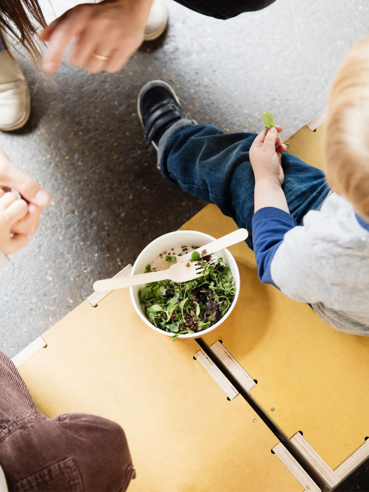
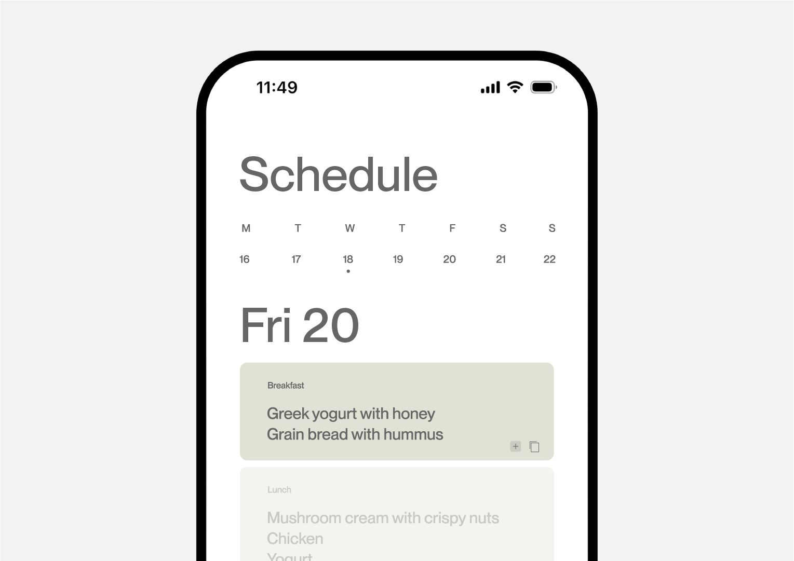
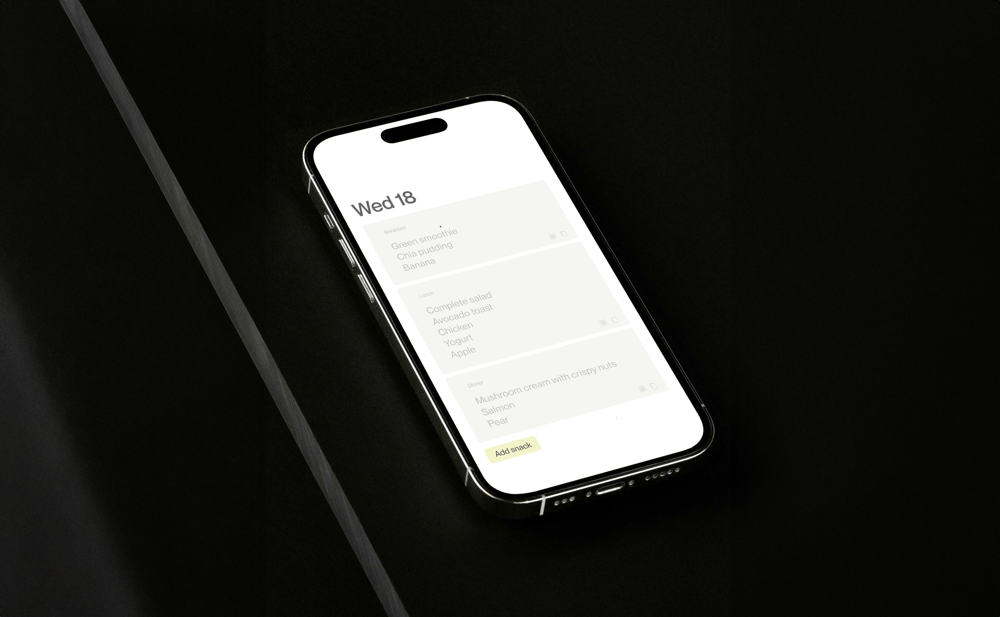
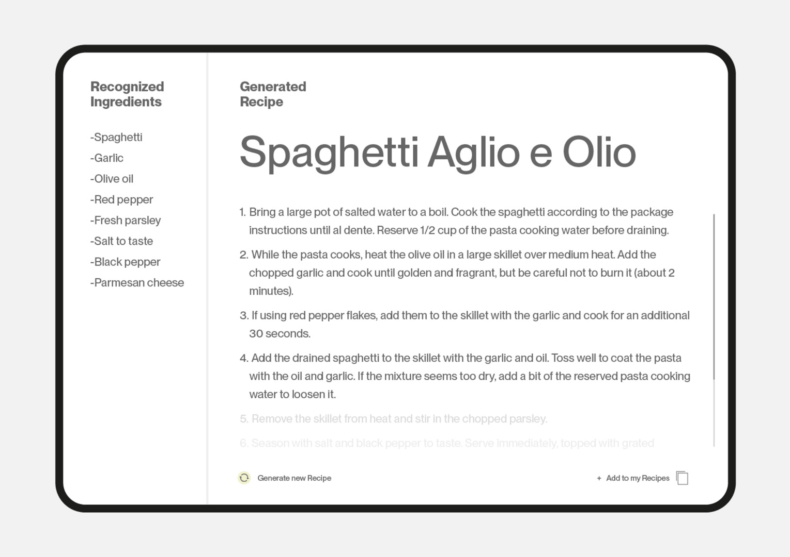

← Back
Balancing simplicity and nutrition in a busy life
The stress and lack of time can lead to choose for pre-packaged meals, takeout, or recipes that require minimal preparation time. However, many people are looking for alternatives that allow them to enjoy nutritious and tasty meals without sacrificing their well-being or spending hours in the kitchen. They seek tools that offer immediacy, simplifying culinary decisions and optimizing the use of available ingredients to reduce waste and enhance their quality of life.

AI into everyday life
Imagine an artificial intelligence that not only analyzes the contents of your fridge and pantry
but also takes your weekly routine into account to create completely personalized menus.
This innovative approach not only optimizes the use of the ingredients you already have on hand
but also adapts to your schedule and lifestyle, simplifying meal management and reducing food waste.

Instant food identification and overview
The AI-powered inventory screen simplifies managing the food in your fridge and pantry. It displays
a live picture of the food and uses advanced image recognition technology to provide the names
of the items. By capturing images of the ingredients with cameras or sensors, the AI automatically
identifies and categorizes each food product, from fruits and vegetables to meats and packaged
items. Then process these images to recognize and classify the foods, making it easy and manage
what you have on hand

AI-Optimized weekly meal planning
Based on this information, the artificial intelligence creates a personalized weekly menu using the ingredients you currently have. It considers your daily routine, including meal times and special
activities, to ensure that the menu fits into your lifestyle.
The AI also works to minimize food waste by using what you already have, and it supports your
health goals and personal preferences. This approach makes meal planning easier, helps you eat
healthily, and fits your schedule perfectly.


AI-Generated shopping list
Imagine an AI that seamlessly manages the task of creating your shopping list for you.
This intelligent system automatically generates a comprehensive and detailed shopping list based
on the specific ingredients needed for your meals. By analyzing your weekly menu and considering
your current fridge and pantry inventory, the AI ensures that you only buy what you need.
The shopping list is meticulously organized into categories such as fruits, vegetables, proteins,
and more, making it easier to navigate the grocery store. With each item grouped, you can quickly
find everything on your list, saving time and reducing the chance of forgetting essential items.
Let AI Create Your Recipes
Transforms your kitchen ingredients into custom recipes. It then uses natural language processing
to generate recipes customized specifically to your ingredients. Each recipe crafted by the AI features
a title, the list of ingredients, step-by-step cooking instructions, and a detailed narrative that brings
the recipe to life. This means you not only get a delicious meal but also a guided cooking experience
that makes preparing it easy and enjoyable.
